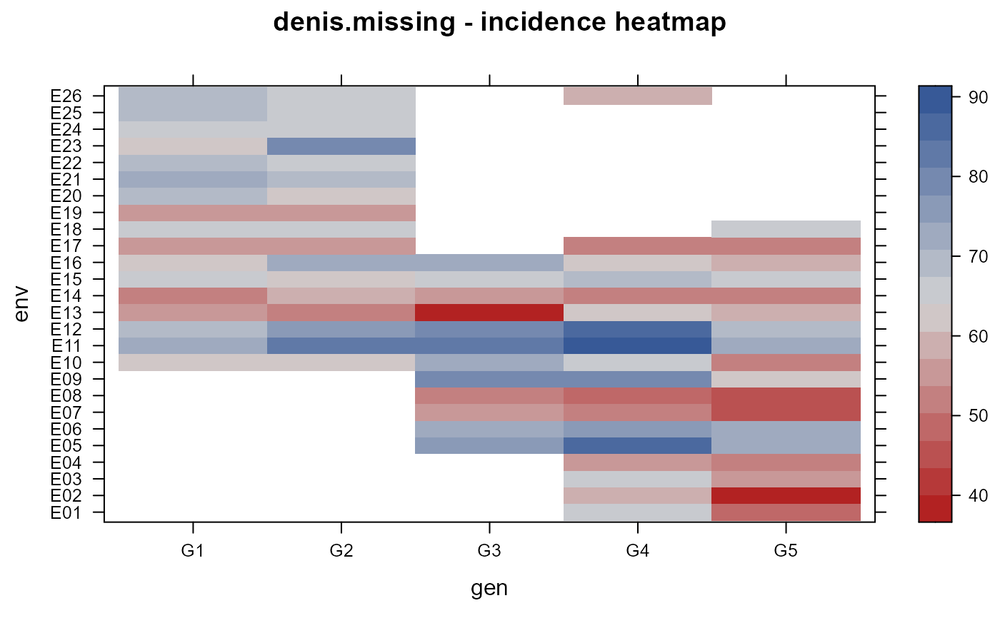

denis.missing.RdGrain yield was measured on 5 genotypes in 26 environments. Missing values were non-random, but structured.
envenvironment, 26 levels
gengenotype factor, 5 levels
yieldyield
Denis, J. B. and C P Baril, 1992, Sophisticated models with numerous missing values: The multiplicative interaction model as an example. Biul. Oceny Odmian, 24--25, 7--31.
Used with permission of Jean-Baptists Denis.
H P Piepho, (1999) Stability analysis using the SAS system, Agron Journal, 91, 154--160. http://doi.og/10.2134/agronj1999.00021962009100010024x
library(agridat) data(denis.missing) dat <- denis.missing # view missingness structure libs(reshape2) acast(dat, env~gen, value.var='yield')#> G1 G2 G3 G4 G5 #> E01 NA NA NA 66 49 #> E02 NA NA NA 59 40 #> E03 NA NA NA 67 57 #> E04 NA NA NA 55 53 #> E05 NA NA 75 85 74 #> E06 NA NA 72 77 71 #> E07 NA NA 55 51 46 #> E08 NA NA 52 49 44 #> E09 NA NA 79 80 62 #> E10 63 64 72 65 51 #> E11 72 82 83 88 72 #> E12 69 76 78 86 70 #> E13 55 53 40 63 60 #> E14 52 59 54 53 51 #> E15 67 62 65 68 65 #> E16 63 74 73 63 59 #> E17 55 54 NA 52 51 #> E18 66 66 NA NA 66 #> E19 57 54 NA NA NA #> E20 69 64 NA NA NA #> E21 73 69 NA NA NA #> E22 68 66 NA NA NA #> E23 64 79 NA NA NA #> E24 67 66 NA NA NA #> E25 70 66 NA NA NA #> E26 70 65 NA 60 NAlibs(lattice) redblue <- colorRampPalette(c("firebrick", "lightgray", "#375997")) levelplot(yield ~ gen*env, data=dat, col.regions=redblue, main="denis.missing - incidence heatmap")# stability variance (Table 3 in Piepho) libs(nlme) m1 <- lme(yield ~ -1 + gen, data=dat, random= ~ 1|env, weights = varIdent(form= ~ 1|gen), na.action=na.omit) svar <- m1$sigma^2 * c(1, coef(m1$modelStruct$varStruct, unc = FALSE))^2 round(svar, 2)#> G5 G3 G1 G2 #> 39.25 22.95 54.36 12.17 23.77## G5 G3 G1 G2 ## 39.25 22.95 54.36 12.17 23.77 # m2 <- asreml(yield ~ gen, random = ~ env + at(gen):env, data=dat)